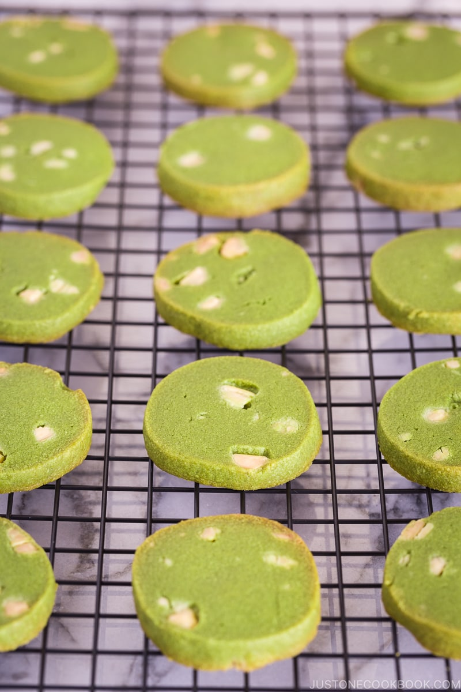

Shrimp Scampi
Origin: Italy
Source: https://cooking.nytimes.com/recipes/9101-classic-shrimp-scampi
Category: Dinner

Recipe Ingredients
- 2 tablespoons butter
- 2 tablespoons extra-virgin olive oil
- 4 garlic cloves, minced
- ½ cup dry white wine or broth
- ¾ teaspoon kosher salt, or to taste
- ⅛ teaspoon crushed red pepper flakes, or to taste
- Freshly ground black pepper
- 1¾ pounds large or extra-large shrimp, shelled
- ⅓ cup chopped parsley
- Freshly squeezed juice of half a lemon
- Cooked pasta or crusty bread
Recipe Steps
- In a large skillet, melt butter with olive oil.
- Add garlic and sauté until fragrant, about 1 minute.
- Add wine or broth, salt, red pepper flakes and plenty of black pepper and bring to a simmer
- Let the wine reduce by half, about 2 minutes
- Add shrimp and sauté until they just turn pink, 2 to 4 minutes depending upon their size.
- Stir in the parsley and lemon juice and serve over pasta or accompanied by crusty bread.
Additional Food images


Double Chocolate Cookies
Origin: Michigan
Source: Family Recipe
Category: Dessert

My daughter learned to make these cookies at a baking camp at Zingermanns and has tweaked the recipe to fit the taste buds of her siblings. They are extremely sugary so the salt helps to balance it. Note, these cookies are best eaten very quickly.
Recipe Ingredients
- Unsalted butter
- Granulated Sugar
- Packed light or dark brown sugar
- Large egg
- Pure vanilla extract
- Semi-sweet chocolate chunks (melted)
- All-purpose flour
- Natural unsweetened cocoa powder
- Baking soda
- Salt
- Semi-sweet chocolate chunks
Recipe Steps
- In a mixing bowl cream together the butter, granulated sugar, and brown sugar
- Add the egg and vanilla extract and beat well
- Add the melted chocolate
- In a separate bowl combine the flour, baking soda, cocoa powder and salt
- Combine the wet and dry ingredients
- Add the unmelted chocolate chunks.
- Form 15 cookies and place on a baking sheet.
- Cook for 12 to 13 minutes at 350 degrees.
Additional Food images


Matcha Cookies
Origin: Japanese
Source: https://www.justonecookbook.com/green-tea-white-chocolate-cookies/
Category: Dessert

These cookies have the perfect flavor balance of the earthiness from the matcha and the sweetness and creaminess from the white chocolate chips. They are crispy and sweet, perfect for an afternoon snack or dessert. Enjoy with a cup of tea!
Recipe Ingredients
- All purpose flour
- Matcha powder
- Unsalted butter
- Kosher salt
- Confectioners sugar
- Egg yolks
- White chocolate chips
Recipe Steps
- Combine flour and matcha powder in a large bowl. Sift the flour and matcha powder.
- Beat softened butter until smooth and creamy.
- Add salt and blend.
- Add sugar and beat until soft and light.
- Add egg yolks and mix until well combined.
- Gradually add flour and matcha mixture and mix until well combined.
- Add chocolate chips and mix until incorporated.
- Divide dough into two pieces. Shape each piece into cylinders about 1.5 inches in diameter.
- Wrap logs in plastic wrap and chill in the fridge for at least two hours.
- Slice into ⅓ inch rounds and place on a baking tray lined with parchment paper.
- Bake at 350 degrees for 15 minutes.
Additional Food images
